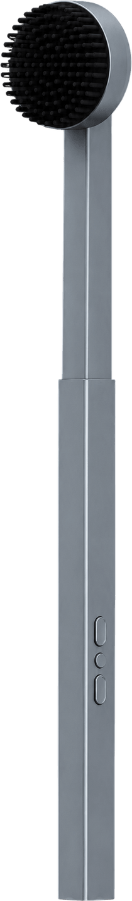
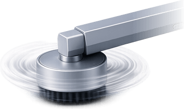
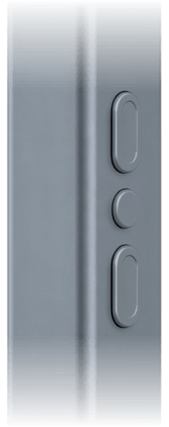
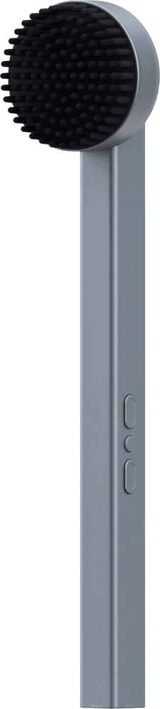

03
מברשת מקלחת מתארכת
עיצוב לנגישות | מנגנון הארכה


הארכה

ראש מברשת מסתובב

כפתורי תפעול
הרעיון
מברשת שמתארכת לפי הצורך, ומאפשרת לאנשים עם מוגבלות פיזית להגיע לכל אזור בגוף, בעצמם ובקלות.
מנגנון פנימי להארכה וקיצור
הרעיון
מברשת שמתארכת לפי הצורך, ומאפשרת לאנשים עם מוגבלות פיזית להגיע לכל אזור בגוף, בעצמם ובקלות.


ראש מברשת מסתובב

כפתורי תפעול